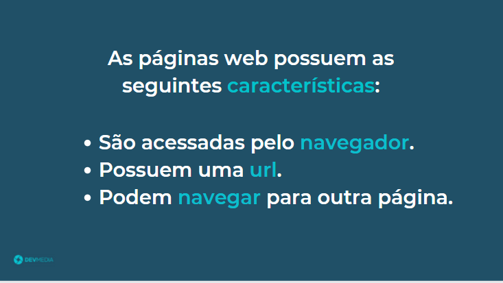
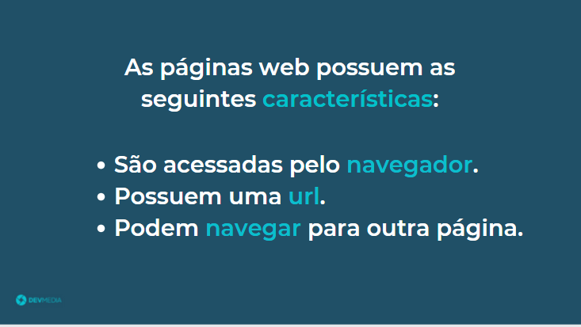
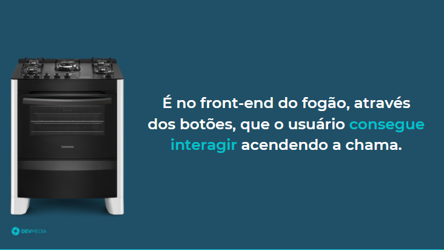
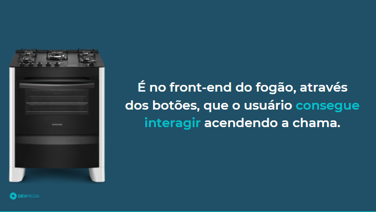

Seja bem-vindo(a) à programação front-end e parabéns pela iniciativa. O primeiro passo é aprender o que é uma página web. O flow abaixo vai te explicar este conceito:
 



 



Veja na Figura 2 um exemplo de um front-end.

O front-end web, ou apenas front-end, é um site onde o usuário consegue ver botões, imagens, informações da página e interagir com ela,
clicando em um botão, abrindo um link e navegando pelo site